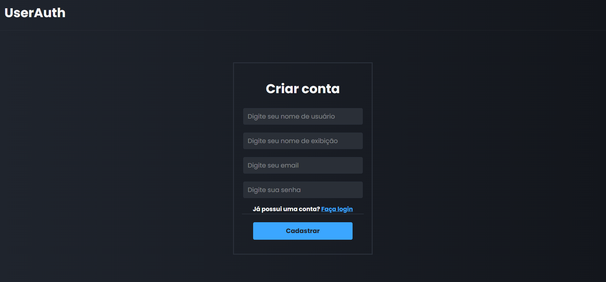
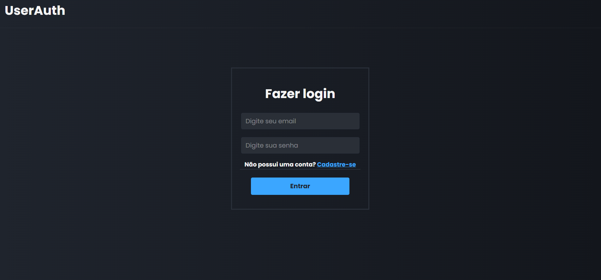
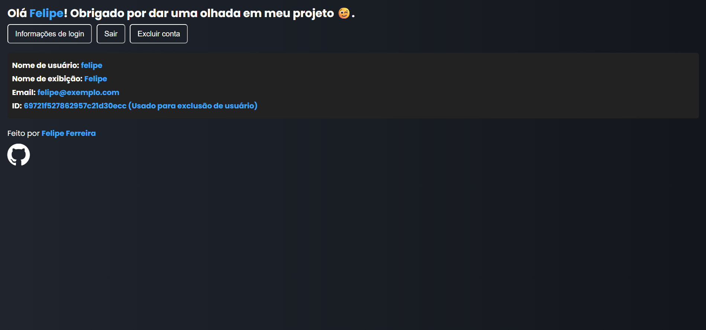

Para a criação deste projeto foram utilizadas as seguintes tecnologias: React, styled-components, Javascript, Node.JS, MongoDB Atlas, Mongoose e Git. Utilizei o Git para versionamento do projeto. No back-end, utilizei Express para criar uma API REST responsável pelo cadastro, autenticação e gerenciamento de usuários. O MongoDB Atlas foi escolhido como banco de dados NoSQL para armazenar os dados dos usuários cadastrados enquanto o Mongoose foi utilizado para modelagem de dados e integração com o banco de forma mais prática. Para proteger informações sensíveis, utilizei o dotenv para armazenar variáveis de ambiente como a URI de conexão com o banco de dados e a chave secreta utilizada na autenticação. No front-end, utilizei React e styled-components, sendo a minha primeira experiência com essa biblioteca de estilização. Por fim, para garantir a segurança dos dados, utilizei o bcrypt para realizar o hash das senhas dos usuários antes de serem armazenadas e implementei a autenticação baseada em JWT (Json Web Token) para proteger rotas privadas da aplicação.


